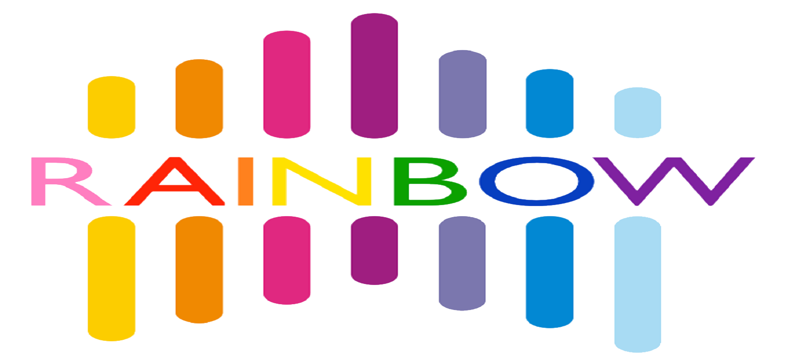

A System about Adaptive Layout Optimization for Wide Tables.

Why Rainbow?
In many industrial and academic data analytical applications, huge amount of structured data is stored as wide two-dimension tables in columnar file formats on HDFS. Popular columnar file formats, including RC File, ORC, Parquet and Carbondata, are widely supported in data analytical systems over HDFS such as Hive, Spark, Presto and Impala.
These file formats partition the data into row groups and place data inside a row group in columnar manner. A row group is stored in an HDFS block. This is an efficient way for that it introduces most advantages of column store into Hadoop ecosystem without affecting parallelism, scalability and fault-tolerance.
With these file formats, tables on HDFS are becoming very wide, from a few hundred columns to tens
of thousands. Wide Table has some important advantages:
- Join Cost Saving: distributed joins are very expensive in HDFS environment. With wide
tables, distributed joins are no longer needed.
- Easy Schema Modification: new workloads and new schema requirements are emerging everyday.
Adding new fields to a wide table is much easier than redesigning the schema following
normal forms.
- Application Friendly: new data features can be added to the table as a set of new fields
without interrupting or modifying running applications.
Although everything looks good having the wide tables stored as columnar formats on HDFS, the I/O efficiency and query performance are far from optimal.
In an experimental example, given a 400GB, 1187-column table stored as Parquet in a single node HDFS. The read bandwidth of HDFS is 100MB/s. A query took 907 seconds to read 8 columns (0.3% data, i.e. 1.2GB) from the table. While ideally, it should take only 12 seconds.
Such a huge gap between ideal and reality is caused by disk seeks. The columns read by a query may not be continuous on disk so that seek cost becomes the major part of I/O cost.
Rainbow is an ETL tool which ADAPTIVELY improve the I/O performance HDFS column stores by reducing the disk seek costs. User can interact with Rainbow to monitor the optimization process in an ETL pipeline.
Key Features
Rainbow enables users to improve the I/O performance of wide tables stored in columnar formats on HDFS. Here are the key features of Rainbow:
- Interactive Pipeline Creation Interface.
Rainbow users can directly Rainbow users can directly create a pipeline.
- Understandable Visual Comparison Interface. With estimated performance and
validated performance, the web page shows clearly the different effects of current and
optimized layout strategy.
- Adaptively Optimizations. In addition to changing layout strategy for
current layout, rainbow runs a host of parallel optimization to change the layout
adaptively for giving workloads the user is currently uploading and presents them as
optimization layouts.
Rainbow generalizes and extends our prior and technical experiment (see papers).
Recent Releases
- May 14, 2017: Our full paper on rainbow has been accepted at SIGMOD 2017. Pre-camera
ready version here.
Papers
Contact Us
For feedback and questions, feel free to email us:
- Haoqiong Bian bianhaoqiong@gmail.com
- Guodong Jin jelly.guodong.jin@gmail.com
- Youxian Tao taoyouxian@edu.ruc.cn
Welcome to contribute and submit pull requests :) (View on GitHub)
© DBIIR 2017